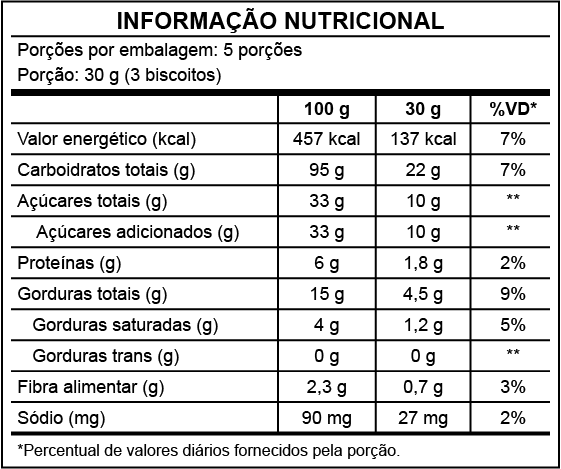
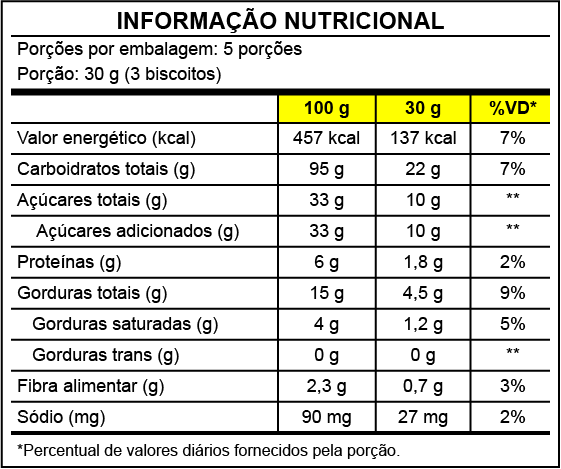
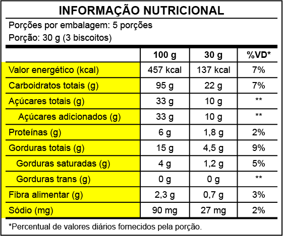

Cuidar da saúde das crianças é um compromisso de todos nós – pais, cuidadores, professores e profissionais de saúde. Promover uma alimentação saudável e prevenir a obesidade infantil são passos importantes para garantir uma vida mais saudável para nossos pequenos. Vamos juntos nessa missão!
Clique ou toque para assistir aos vídeos.
Cenário da obesidade infantil
Obesidade no mundo e no Brasil
Obesidade infantil: um dos desafios da saúde pública do século XXI. Confira o cenário atual desta
epidemia.
Atualidade, como mudar?
Pequenas mudanças para grandes transformações no cenário da obesidade infantil.
Fatores da obesidade complexa e multifatorial
Ambientes “obesogênicos” e sedentarismo
Fatores externos e suas influências no cotidiano sedentário
Alimentos pouco saudáveis e o acesso a comidas industrializadas
A falta de acesso a alimentos saudáveis e a facilidade das comidas industrializadas: uma combinação
perigosa
Extensa jornada de trabalho dos pais e aleitamento materno
A rotina dos pais e sua influência no crescimento saudável
Publicidade direcionada
A intervenção da publicidade na escolha dos alimentos
Desfechos e impactos da obesidade na saúde
Doenças crônicas e complicações físicas
A obesidade infantil e o impacto no corpo
Problemas sociais e seus impactos
A obesidade infantil e o impacto na mente
Prevenção e tratamento
Alimentação saudável: onde começa?
As mudanças no prato e as transformações saudáveis
Alimentação saudável e as categorias dos alimentos
As categorias dos alimentos e a qualidade de suas refeições
Alimentação saudável: monte seu prato
Passo a passo de como montar um prato colorido, diverso e saudável
Alimentação saudável: preserve seus alimentos
Dicas de como preservar seus alimentos e mantê-los frescos por mais tempo
Alimentação saudável: manipulação segura
Dicas de como manipular corretamente os alimentos e mantê-los seguros
Alimentação saudável: atenção aos rótulos
Dicas de como entender os rótulos e conhecer os alimentos que você compra
O ato de comer
Regularidade e atenção
A importância de comer com regularidade e atenção
Escolha o ambiente
A importância do ambiente na hora de comer
Escolha a companhia
A importância da companhia na hora de comer
Crescendo feliz!
Rotina na alimentação
A rotina como fator essencial para a alimentação saudável
Pratos coloridos
Pratos coloridos e saúde de qualidade
Xô, sedentarismo!
A rotina como fator essencial para a alimentação saudável
Fechamento da imersão das “Dicas crescendo com saúde”
A importância do exercício físico no combate à obesidade
Confira a seguir dez dicas de alimentação e rotina saudáveis para a família, adaptadas do Guia
Alimentar para a População Brasileira (2014).
Lembre-se de que são fundamentais a sua participação e o seu exemplo no processo de uma alimentação
saudável para as crianças!
Dez dicas de alimentação e rotina saudáveis para a família
Prefira alimentos frescos, in natura ou minimamente processados para a maioria das refeições
diárias e limite o consumo de alimentos processados e ultraprocessados.
Planeje as refeições em família ou com amigos. Dedique a atenção, a presença e o carinho que esse
momento merece.
Compartilhe e desenvolva habilidades culinárias. Prepare as refeições com óleos, gorduras, sal e
açúcar em quantidades suficientes para conferir sabor, mas sem excessos.
Visite as feiras de produtos naturais em família e dê preferência aos alimentos da sua região,
principalmente os frescos, da estação e, se possível, os orgânicos.
Seja crítico quanto às informações, à publicidade e aos modismos sobre alimentação.
Conecte-se com seu corpo: confie e “escute” os sinais de fome, saciedade, sede e necessidade de
descanso.
Estabeleça uma rotina para a família acordar e dormir e respeite o seu corpo com horas de descanso de
qualidade.
Respeite a fome dos seus filhos: não os distraia para comer nem os prive de alimentos quando estiverem
com fome. Os pais têm responsabilidade quanto à qualidade do alimento oferecido e ao local adequado para
as refeições de seus filhos.
Reserve um tempo de qualidade para o lazer em família e esteja presente de fato; ria alto e brinque
com prazer.
Reduza o seu tempo e o de seus filhos em frente às telas. Mantenham-se em movimento e com a prática de
atividade física regular e prazerosa.
Material complementar
Confira a seguir alguns materiais complementares para que você aprofunde seus conhecimentos,
compartilhando-os também com as crianças.
Clique ou toque para fazer download do e-book “Escolhas saudáveis nas preparações culinárias” e tenha-o sempre à mão para os preparos dos seus alimentos.
Rótulos: entendendo na prática
Os rótulos dos alimentos nos ajudam a fazer escolhas mais saudáveis, pois trazem informações claras sobre o que estamos consumindo. Eles mostram o nome do produto, a marca, a validade, a tabela nutricional, os ingredientes, os alérgenos e como guardar ou preparar o alimento. Assim, conseguimos fazer uma alimentação mais consciente e informada.
A seguir, você encontrará informações referentes aos elementos da embalagem:
Clique ou toque nos botões para visualizar o conteúdo.
Rotulagem frontal
Consiste na aplicação frontal de lupas na embalagem sempre que o alimento tiver em sua composição altas concentrações de sódio, gorduras saturadas e açúcares adicionados. Pode apresentar o destaque de um, dois ou os três nutrientes. Veja:
Lupa para “Alto em açúcar adicionado” Fonte: Sesc/RS (2025)
Imagem em formato de retângulo, nas cores preta e branca, com uma lupa à esquerda e, à direita, o texto “alto em açúcar adicionado”.
Lupa para “Alto em açúcar adicionado” e “Alto em gordura saturada” Fonte: Sesc/RS (2025)
Imagem em formato de retângulo, nas cores preta e branca, com uma lupa à esquerda e, ao lado, o texto “alto em”. Abaixo, estão os textos “açúcar adicionado” e “gordura saturada”.
Lupa para “Alto em açúcar adicionado”, “Alto em gordura saturada” e “Alto em sódio” Fonte: Sesc/RS (2025)
Imagem em formato de retângulo, nas cores preta e branca, com uma lupa à esquerda e, à direita, os textos “alto em açúcar adicionado”, “gordura saturada” e “sódio”.
O objetivo é chamar a atenção do consumidor quando a quantidade do nutriente crítico à saúde for considerada alta para uma porção de 100 g ou 100 ml. A aplicação das lupas na rotulagem frontal possibilita ao consumidor dispor de mais informações para realizar escolhas alimentares conscientes e compor da forma mais adequada a sua alimentação diária.
Para fins da rotulagem nutricional, a quantidade dos ingredientes críticos é considerada alta conforme o quadro:
INGREDIENTE
ALIMENTOS SOLIDOS
ALIMENTOS LÍQUIDOS
SÓDIO
≥ 600 mg/100 g
≥ 300 mg/100 ml
AÇÚCARES ADICIONADOS
≥ 15 g/100 g
≥ 7,5 g/100 ml
GORDURAS SATURADAS
≥6 g/100 g
≥ 3 g/100 ml
Quantidade indicada dos ingredientes críticos Fonte: Sesc/RS (2025)
Tabela nutricional: quantidade por porções, porção referência e medida caseira
É onde estão as informações sobre a composição do alimento industrializado.
A parte de cima da tabela contém as seguintes informações:
Quantidade de porções contidas na embalagem
Porção referência que segue a regulamentação da Anvisa e indica em gramas ou mililitros a quantidade média que deveria ser consumida por indivíduos sadios em cada ocasião de consumo
Medida caseira equivalente (entre parenteses)
Veja:

INFORMAÇÃO NUTRICIONAL
Porções por embalagem: 5 porções Porção: 30 g (3 biscoitos)
100 g
30 g
%VD*
Valor energético (kcal)
457 kcal
137 kcal
7%
Carboidratos totais (g)
95 g
22 g
7%
Açúcares totais (g)
33 g
10 g
**
Açúcares adicionados (g)
33 g
10 g
**
Proteínas (g)
6 g
1,8 g
2%
Gorduras totais (g)
15 g
4,5 g
9%
Gorduras saturadas (g)
4 g
5%
9%
Gorduras trans (g)
0 g
0 g
**
Fibra alimentar (g)
2,3 g
0,7 g
3%
Sódio (mg)
90 mg
27 mg
2%
*Percentual de valores diários fornecidos pela porção.
Exemplo de tabela nutricional Fonte: Sesc/RS (2025)
Tabela nutricional: valor energético e lista obrigatória
Já na parte de baixo da tabela, está o valor energético e a lista obrigatória de nutrientes. Na primeira coluna estão expressas as quantidades por 100 g ou 100 ml do alimento; na segunda coluna, estão as quantidades de nutrientes por porção recomendada para consumo; na terceira coluna, estão o percentual de valores diários (%VD), que indica quanto a porção de referência fornece em relação ao consumo diário recomendado de nutrientes com base em uma dieta de 2.000 kcal.
Essa é uma referência padrão sobre as necessidades nutricionais de uma pessoa adulta e que pode variar de acordo com sexo, idade, atividade física, entre outros fatores.

INFORMAÇÃO NUTRICIONAL
Porções por embalagem: 5 porções Porção: 30 g (3 biscoitos)
100 g
30 g
%VD*
Valor energético (kcal)
457 kcal
137 kcal
7%
Carboidratos totais (g)
95 g
22 g
7%
Açúcares totais (g)
33 g
10 g
**
Açúcares adicionados (g)
33 g
10 g
**
Proteínas (g)
6 g
1,8 g
2%
Gorduras totais (g)
15 g
4,5 g
9%
Gorduras saturadas (g)
4 g
5%
9%
Gorduras trans (g)
0 g
0 g
**
Fibra alimentar (g)
2,3 g
0,7 g
3%
Sódio (mg)
90 mg
27 mg
2%
*Percentual de valores diários fornecidos pela porção.
Exemplo de tabela nutricional Fonte: Sesc/RS (2025)
Tabela nutricional: nutrientes obrigatórios
Na tabela nutricional, devem estar informadas as quantidades dos nutrientes mais relevantes para a saúde, que são: carboidratos totais (indicando açúcar total e açúcar adicionado), proteínas, gorduras totais (indicando gorduras saturadas e trans), fibras alimentares e sódio.
Vitaminas e minerais, embora também sejam relevantes para a saúde, serão indicadas em determinados casos conforme especificação legal.

INFORMAÇÃO NUTRICIONAL
Porções por embalagem: 5 porções Porção: 30 g (3 biscoitos)
100 g
30 g
%VD*
Valor energético (kcal)
457 kcal
137 kcal
7%
Carboidratos totais (g)
95 g
22 g
7%
Açúcares totais (g)
33 g
10 g
**
Açúcares adicionados (g)
33 g
10 g
**
Proteínas (g)
6 g
1,8 g
2%
Gorduras totais (g)
15 g
4,5 g
9%
Gorduras saturadas (g)
4 g
5%
9%
Gorduras trans (g)
0 g
0 g
**
Fibra alimentar (g)
2,3 g
0,7 g
3%
Sódio (mg)
90 mg
27 mg
2%
*Percentual de valores diários fornecidos pela porção.
Exemplo de tabela nutricional Fonte: Sesc/RS (2025)
Valor energético: é a energia produzida pelo nosso corpo, proveniente dos carboidratos totais, das proteínas e das gorduras totais.
Carboidratos totais: são alimentos que têm como principal função fornecer energia para as células do corpo. São encontrados em maior quantidade em massas, arroz, açúcar, mel, pães, farinhas, tubérculos (batata, mandioca, inhame) e doces em geral.
Açúcares: são carboidratos encontrados em diversas formas e em diversos alimentos. Encontrados naturalmente nas frutas, na forma de frutose, e no leite, na forma de lactose. Para adoçar bebidas e alimentos, são utilizados diferentes açúcares, como a sacarose, obtida principalmente do caldo da cana-de-açúcar e da beterraba, que é apresentada como açúcar refinado, cristal, mascavo, entre outras formas. A indústria também utiliza outros tipos de açúcares, como o açúcar invertido, composto de sacarose, frutose e glicose, e ainda a maltodextrina, a dextrose, os néctares, o xarope de milho, entre outros.
Proteínas: são componentes dos alimentos necessários para a construção e manutenção de órgãos, tecidos e células do corpo. As proteínas são encontradas em carnes, ovos, leites e dervados, bem como em leguminosas (como feijões, soja e ervilha).
Gorduras totais: são as principais fontes de energia do corpo e ajudam na absorção de vitaminas A, D, E, K. As gorduras totais referem-se à soma de todos os tipos de gorduras presente no alimento.
Gorduras saturadas: é um tipo de gordura presente em alimentos de origem animal (carnes, toucinho, pele de frango, queijos, leite integral, manteiga, requeijão e iogurte). O consumo deve ser moderado, pois, em grandes quantidades, pode aumentar o risco de doenças cardiovasculares.
Gorduras trans ou ácidos graxos trans: podem estar naturalmente presentes em alimentos de origem animal ou serem produzidos na indústria para conferir mais crocância e sabor aos alimentos, além de aumentar a validade para determinados produtos. Esse tipo de gordura é encontrado nos alimentos ultraprocessados e, quando em excesso, pode aumentar o risco para doenças cardiovasculares. Atualmente, a OMS recomenda que o consumo diário de gordura trans não ultrapasse 1% do valor energético total de uma dieta, o que representaria até 2 g por dia em uma dieta de 2.000 calorias.
Fibras alimentares: são partes dos alimentos de origem vegetal que resistem à digestão. Embora não tenham valor nutritivo, são fundamentais para a saúde, pois modulam a velocidade de digestão e absorção de nutrientes, além de carrear a gordura e os resíduos excedentes da alimentação e servir de nutriente para a microbiota intestinal.
Sódio: além de ser o principal constituinte do sal de cozinha, o sódio está presente nos alimentos ultraprocessados. Deve ser consumido com moderação, já que o excesso pode resultar no aumento da pressão arterial. A recomendação atual da OMS é de 2 g de sódio por dia, o que equivale a 5 g de sal/dia.
Lista de ingredientes
É apresentada em ordem decrescente, ou seja, o ingrediente que aparece em primeiro lugar na lista está presente em maior quantidade naquele alimento ou produto, assim como aquele que aparece em último estará em quantidade reduzida em relação aos demais ingredientes.
Seguem dicas importantes e fáceis de observar:
Quanto menos ingredientes, melhor!
Opte por alimentos que você reconhece os ingredientes da lista, por exemplo: leite, ovos, farinha.
Quanto mais nomes complexos e que você não reconhece, mais ultraprocessado será o produto. Por exemplo: aditivos alimentares, corantes, edulcorantes e conservantes.
Dicas finais
Para tornar a criança ou o jovem fisicamente ativo, apresente uma variedade de atividades, como jogos, danças e esportes, e incentive a prática conjunta. Procure locais como praças, parques e quadras esportivas para atividades físicas e sugira ir a pé ou de bicicleta para a escola, quando seguro. Participe de grupos de atividade física em sua comunidade.
A família é essencial para formar hábitos saudáveis, como a prática regular de atividades físicas e a redução do tempo sedentário. Limite o uso de dispositivos eletrônicos a, no máximo, duas horas por dia e incentive a substituição desse tempo por atividades físicas. Durante as tarefas escolares, estimule pausas para movimentação e ajude a organizar o tempo para equilibrar estudo, atividade física, descanso e alimentação.